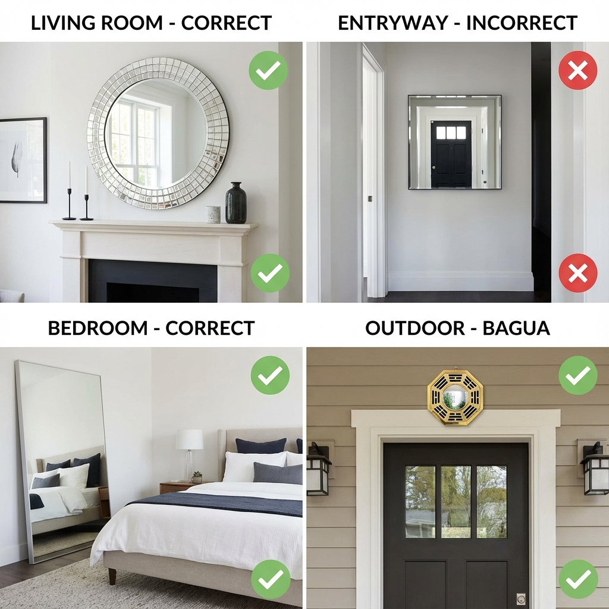

The Power of Mirrors in Feng Shui
Mirrors are one of the most powerful feng shui tools – they can double your wealth or drain your energy, depending on placement. In feng shui, mirrors:
- 🪞 Reflect and amplify energy (good or bad)
- ✨ Expand space and bring light
- 🔄 Redirect chi flow
- 🛡️ Protect against negative energy
- 💰 Attract or repel wealth
The key is knowing WHERE and HOW to place them. A mirror in the wrong spot can cause sleepless nights, financial loss, or relationship problems.
📖 Table of Contents
Mirror Functions in Feng Shui
1. Expand Space
Mirrors create the illusion of a larger room by reflecting the space.
- ✅ Best for: Small rooms, narrow hallways
- ✅ Reflects: Beautiful views, natural light
2. Bring in Light
Mirrors reflect natural and artificial light, brightening dark spaces.
- ✅ Place opposite windows
- ✅ Reflect chandelier or lamps
3. Redirect Energy
Mirrors can redirect chi flow in beneficial directions.
- ✅ Deflect negative energy (sha chi)
- ✅ Guide positive energy through the home
4. Double Abundance
Mirrors can symbolically double what they reflect.
- ✅ Reflect dining table (doubles food = abundance)
- ✅ Reflect cash register or safe (doubles wealth)
- ❌ Never reflect toilet (doubles waste)
Entryway Mirror Rules
The #1 Rule: Never Face the Door!
This is the most important feng shui mirror rule.
A mirror directly facing the front door:
- ❌ Reflects positive energy back out
- ❌ Pushes away opportunities and wealth
- ❌ Prevents good chi from entering
- ❌ Creates unstable, chaotic energy
Correct Entryway Placement
- ✅ Side wall: Perpendicular to the door (left or right)
- ✅ Reflects beauty: Plants, artwork, or natural light
- ✅ Eye level: Positioned for easy use
- ✅ Round or oval: Softer, more welcoming energy
Benefits of Correct Placement
- Last-minute appearance check before leaving
- Expands narrow entryway visually
- Reflects light into the space
- Creates welcoming energy
Living Room Mirrors
Best Placement
- ✅ Above fireplace: Traditional, creates focal point
- ✅ Opposite window: Reflects natural light and outdoor view
- ✅ Reflects chandelier: Amplifies light and luxury
- ✅ Behind sofa: Only if it doesn't face the door
What to Reflect
- ✅ Beautiful outdoor views (garden, mountains, water)
- ✅ Artwork or decorative elements
- ✅ Natural light from windows
- ✅ Healthy plants
- ❌ Clutter or mess
- ❌ Toilet or bathroom door
Size Considerations
- Large mirrors: Make small living rooms feel spacious
- Medium mirrors: Balanced energy, versatile
- Avoid: Mirrors so large they dominate the room
Bedroom Mirror Taboos (CRITICAL!)
The Golden Rule: NO Mirror Facing the Bed
This is the #1 bedroom feng shui mistake!
Why It's Harmful
A mirror facing your bed causes:
- ❌ Sleep problems: Insomnia, restless sleep, nightmares
- ❌ Health issues: Depleted energy, fatigue
- ❌ Relationship problems: Arguments, infidelity concerns
- ❌ Anxiety: Feeling watched or unsettled
The Science Behind It
When you sleep, your body releases energy. A mirror facing the bed:
- Reflects this energy back to you (overstimulation)
- Creates movement in your peripheral vision (disrupts sleep)
- Symbolically "doubles" the bed (third party in relationship)
Acceptable Bedroom Mirror Placement
- ✅ Inside closet door: Hidden when not in use
- ✅ Side wall: Not reflecting the bed
- ✅ Dressing area: Separate from sleeping area
- ✅ Covered at night: Use a cloth or screen
Full-Length Mirror in Bedroom
If you need a full-length mirror:
- ✅ Place on the back of bathroom or closet door
- ✅ Position on wall perpendicular to bed
- ✅ Ensure it doesn't reflect you while lying down
- ❌ Never at the foot of the bed
Bathroom Mirrors
Above the Sink (Standard)
This is the most common and acceptable placement:
- ✅ Functional and necessary
- ✅ Reflects your face (self-care)
- ✅ Brings light into often windowless space
Important Rules
- ✅ Keep clean: Spotless mirrors = clear mind
- ✅ Good lighting: Bright, flattering light
- ✅ No cracks: Replace broken mirrors immediately
- ❌ Don't face toilet: Reflects waste energy
Bathroom Door Consideration
- Keep bathroom door closed
- If bathroom mirror is visible from bedroom, use a screen or curtain
- Never have bathroom mirror directly facing bed
Dining Room Mirrors
The Wealth Multiplier
Dining room is one of the BEST places for a mirror!
Why It Works
A mirror reflecting the dining table:
- ✅ Doubles the food (symbolizes abundance)
- ✅ Multiplies wealth and prosperity
- ✅ Enhances family gatherings
- ✅ Creates festive, abundant atmosphere
Best Placement
- ✅ Side wall: Reflects the table from the side
- ✅ Large mirror: Reflects entire table
- ✅ Framed elegantly: Matches dining room decor
What to Avoid
- ❌ Mirror facing kitchen (reflects stove = fire element imbalance)
- ❌ Mirror reflecting clutter or mess
Mirror Types & Shapes
Round Mirrors ⭕
- Element: Metal
- Energy: Harmonious, complete, flowing
- Best for: Entryway, living room, dining room
- Symbolism: Unity, wholeness, heaven
Square/Rectangle Mirrors ⬜
- Element: Earth
- Energy: Stable, grounding, structured
- Best for: Office, study, bathroom
- Symbolism: Stability, foundation, earth
Oval Mirrors 🥚
- Element: Metal (softer)
- Energy: Gentle, flowing, elegant
- Best for: Bedroom (if must have), entryway
- Symbolism: Softness, femininity
Bagua Mirror 🛡️
- Type: Octagonal with trigrams
- Purpose: Protection, deflect negative energy
- Placement: OUTSIDE only (above door, facing out)
- Warning: Never use indoors!
Convex vs. Concave Mirrors
Convex (bulging out):
- Deflects negative energy
- Use outside to protect from sha chi
- Disperses energy
Concave (curving in):
- Gathers and concentrates energy
- Use with caution
- Can be too powerful for home use
Critical Mirror Taboos
1. Mirror Facing Bed ❌
Problem: Sleep issues, health problems, relationship troubles
Solution: Remove, relocate, or cover at night
2. Mirror Facing Front Door ❌
Problem: Reflects positive energy out, blocks opportunities
Solution: Move to side wall or remove
3. Mirror Facing Toilet ❌
Problem: Doubles waste energy, wealth "flushed away"
Solution: Keep bathroom door closed, reposition mirror
4. Mirror Facing Stove ❌
Problem: Fire element imbalance, family conflicts
Solution: Relocate mirror or use a screen
5. Broken or Cracked Mirror ❌
Problem: Distorted energy, bad luck, fragmented life
Solution: Replace immediately, dispose properly
6. Mirror Reflecting Clutter ❌
Problem: Doubles chaos and mess
Solution: Declutter or reposition mirror
7. Too Many Mirrors ❌
Problem: Overstimulation, confusion, unstable energy
Solution: Limit to 1-2 mirrors per room
8. Mirror Facing Another Mirror ❌
Problem: Infinite reflection, energy bouncing endlessly
Solution: Remove one or reposition
How to Fix Mirror Problems
If You Can't Remove the Mirror
Sometimes mirrors are built-in or difficult to remove. Here are solutions:
1. Cover It
- Use a beautiful cloth or curtain
- Cover at night (especially bedroom mirrors)
- Decorative screen in front
2. Angle It
- Tilt mirror to reflect something positive
- Adjust so it doesn't directly face bed/door
- Use adjustable mirror stands
3. Block the View
- Place tall plant in front
- Use folding screen
- Hang curtain or beads
4. Neutralize with Elements
- Place earth element items (crystals, stones) near mirror
- Add plants to absorb excess energy
- Use soft lighting to balance
Disposing of Broken Mirrors
- Wrap in red cloth or paper
- Dispose during daytime
- Don't keep broken mirrors "for later"
- Replace immediately with new mirror
Mirrors for Wealth Activation
1. Reflect Your Cash Register or Safe
- Symbolically doubles your money
- Place mirror behind or beside
- Keep area clean and organized
2. Reflect Dining Table
- Doubles food = doubles abundance
- Best in dining room
- Large mirror for maximum effect
3. Reflect Water Features
- Water = wealth in feng shui
- Mirror amplifies water energy
- Aquarium, fountain, or water art
4. Wealth Corner Mirror
- Place in far left corner from entrance
- Reflects wealth symbols (plants, crystals)
- Keep area bright and clean
What NOT to Reflect for Wealth
- ❌ Toilet or bathroom
- ❌ Trash bins
- ❌ Clutter or mess
- ❌ Broken items
- ❌ Dark, negative spaces
Your Mirror Feng Shui Checklist
- ✅ No mirror facing the bed
- ✅ No mirror facing the front door
- ✅ No mirror facing the toilet
- ✅ No mirror facing the stove
- ✅ All mirrors clean and spotless
- ✅ No broken or cracked mirrors
- ✅ Mirrors reflect beautiful views or light
- ✅ Dining room mirror reflects table
- ✅ Entryway mirror on side wall
- ✅ Maximum 1-2 mirrors per room
- ✅ Appropriate size for the space
- ✅ Mirrors enhance, not dominate
📚 Related Feng Shui Guides
- Entryway Feng Shui - Critical mirror rules for your entrance
- Bedroom Feng Shui Guide - Mirror taboos for better sleep
- Living Room Feng Shui - Where to place mirrors for wealth
- 2026 Fire Horse Planning Guide - Complete yearly feng shui guide
❓ Frequently Asked Questions
NO - this is the #1 feng shui mirror taboo! A mirror facing the front door reflects positive energy (chi) back out before it can enter your home. This blocks wealth, opportunities, and good fortune. Place mirrors on side walls perpendicular to the door instead.
Mirrors facing the bed cause insomnia, nightmares, and relationship problems. They reflect your energy back while sleeping (overstimulation), create movement in peripheral vision, and symbolically invite a "third party" into the relationship. Cover bedroom mirrors at night or place them inside closet doors.
The dining room is the best place! A mirror reflecting your dining table symbolically "doubles" the food, representing abundance and prosperity. Also excellent: reflecting your wealth corner (far left from entrance), cash register, or safe. Never reflect toilets, clutter, or trash.
Round mirrors are generally best - they represent the Metal element and create harmonious, flowing energy (symbolizing heaven and unity). Oval mirrors are softer and feminine. Square/rectangular mirrors represent Earth element, good for grounding in offices. Avoid Bagua mirrors indoors - they're only for exterior use!
Replace broken mirrors immediately! Cracked mirrors cause distorted, fragmented energy and bad luck. To dispose: wrap in red cloth or paper, discard during daytime, and replace with a new mirror right away. Never keep broken mirrors "for later" - they continuously drain positive energy.
🎁 Want a Complete Home Feng Shui Guide?
Download my FREE Feng Shui Guide with room-by-room checklists!
Get Your Free Guide